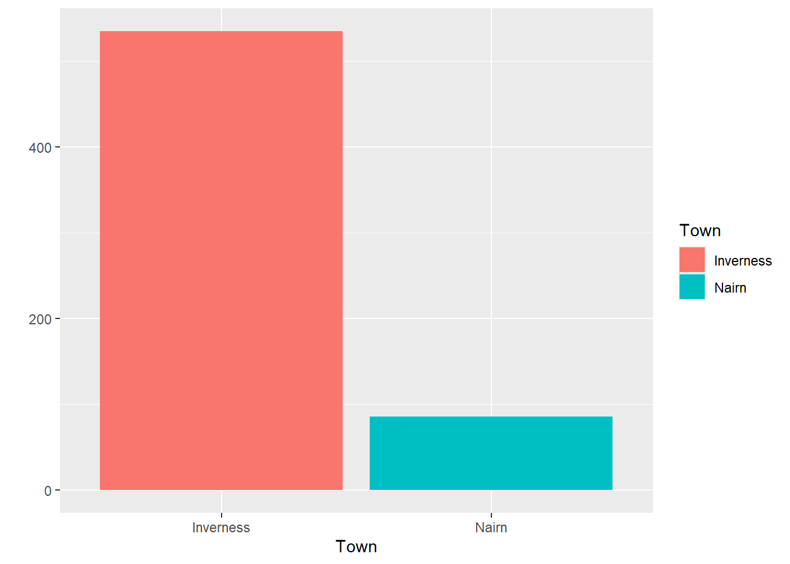

| Type | Name | Main_area_of_care | Postcode | Town | TotalBeds |
|---|---|---|---|---|---|
| Voluntary or Not for Profit | Whinnieknowe (Care Home) | Older people - frailty | IV12 5EN | Nairn | 24 |
| Private | Southside Care Home | Older people - frailty | IV2 4XA | Inverness | 27 |
| Private | Kingsmills Care Home | Older people - dementia | IV2 3RE | Inverness | 60 |
| Voluntary or Not for Profit | Isobel Fraser Home | Older people - frailty | IV2 4AE | Inverness | 30 |
| Private | Highview Care Home | Older people - frailty | IV3 8SD | Inverness | 77 |
The data journey
data skills
beginner
NoteSession outline
In this session, we’ll work through a simple data task. We’ll use a small dataset about beds in care homes. We’ll talk about how to approach the task, demonstrate how that data should be tidied, show some examples of summarising data to help understand and communicate key findings, draw some graphs to represent our data, and talk about how this dataset might be useful for explanation, prediction, and control.
Sentence aim
To introduce the core aspects of data work to engage participants, and to set up later sessions in this course.
Exercises
- E1: take an imperfect dataset and tidy it
- E2: think about how you might have made this data, and how that might change how you use it
- E3: practical about summarising the data in different ways
- E4: thinking about purposes: how might different summaries change how you think about the data
- E5: thinking about different ways of visualising this data
- E6: homework - take an extended dataset
Data
This session uses some publicly-available data from the Care Inspectorate datastore. Specifically, we’ll use a small extract from their main 2025 end-of-year data concentrating on care homes for older adults in Inverness and Nairn.
Key concepts
- understanding the different steps in data tasks
- thinking about explanation, prediction, and control
- to introduce the idea of the data journey, and talk about why that’s a helpful idea when thinking about data work
Introduction
This session aims to help you understand what data is, how data helps us do good work in health and care, and what we need to know about data to achieve that. Here, we’ll explore the idea that data is an especially powerful way of understanding how systems in health and care really work. That’s because data is an excellent way of answering some of the most important questions about our work, such as:
- “is our hospital busier than it was last year?”
- “do we have proportionally more children than average in our town?”
- “how many people are currently homeless in Scotland?”
This course will give an introduction to answering these questions using data. For the purposes of this course, we’ll think about data as structured information, usually numerical, that tells us about part of a system. Specific examples of datasets that might help us answer our three questions above:
- a month-by-month count of patients visiting our hospital for the last two years
- census data, showing demographics of different towns in Scotland
- survey data estimating how many people are currently homeless nationally
The data journey
One of the most important ideas in this whole course is the data journey. If we want to answer a question about our system using data, we need to complete several linked steps in order, so that we can travel from an initial hunch or query to a finished answer. We call those steps the data journey. Very roughly, the steps in the data journey are:
- to try and data-fy our system
- to collect data from that data-fied system
- to tidy our data
- to summarise that data
- to visualise that data
- to communicate those findings to others
The later sessions of this course are based on exploring the individual steps in the data journey in more detail. But the plan for today is simpler: we’ll try and complete a whole data journey, a simple one, in one go. The aim here is to give you a high-level map of what we’re going to talk about later in this course to help you navigate why we’re talking about specific issues. Because some of these steps can be quite technical and detailed, it’s really important to keep an eye on the prize - being able to put your data to work - and the best way to do that is to work through everything once quickly without being too detailed.
To make today’s data journey possible, we’ll do a bit of cheating by starting with a carefully-chosen (and polished) dataset. For now, don’t worry too much about what we’re missing by taking this shortcut, because in the next couple of sessions we’ll spend a lot of time on the ins-and-outs of building lovely datasets from real systems.
With our data in hand, we’ll then think about how to understand, summarise, visualise, and compare data that we’ve collected. Finally, we’ll talk about how to take those statistics, and use them to do things. As we’ll see, statistical summaries of data are especially helpful in helping us understand the systems we’re working on. We’ll look specifically at three areas where understanding is especially important: explaining how systems work, predicting what will happen as our system changes, and controlling the behaviour of that system.
Together, we’ll describe this linked set of practices and skills as data skills, which describes a set of knowledge and practical skills across the data journey from raw data to finished project. In this course, we’ll think about data skills as being made up of a combination of:
- understanding how systems can be data-fied
- having some awareness of the tools and rules that we should use when gathering data
- knowing a bit about some statistical tools used to understand, summarise, and compare that data
- understanding some effective strategies for using this data (and statistics) as a basis for the explanation/prediction/control of systems, including how to communicate your findings to others
- finally, figuring out how to use that knowledge of what you want to do with your data to simplify and streamline other aspects of the data journey
Data for this session
This session uses some publicly-available data from the Care Inspectorate datastore. Specifically, we’ll use a small extract from their main 2025 end-of-year data concentrating on care homes for older adults in Inverness and Nairn. We’ll have a chance to look at that data more thoroughly later, but here’s a short preview to help you get acquainted:
Hopefully that’s fairly self-explanatory: we’ve got one row per care home, with columns for the type of home, the name, the main area for which the home provides care, the postcode and location of the home, and the total number of beds. In this session, we’ll try to use this data to answer a couple of questions about the provision of care in this area. Specifically, over this session we’ll try to answer the following questions:
ImportantQuestions for this session
- How many care home beds are there in total in Inverness and Nairn together?
- How do the beds available for different main areas of care compare?
- Does Inverness or Nairn have more care home beds? What’s the right way of comparing the two?
- Is there some kind of relationship between the size of care home, and their town?
The next step is to open this data yourself, and have a look at the full data set.
NoteTask one: inspect your data
- download the dataset as an Excel file to your computer
- open it in Excel (or whichever tool you’re planning to use for this session)
- familiarise yourself with the data: you should see that we have about a dozen rows of data
- see if there are any areas that you might want to tidy up
Tidying data
A reminder: this course is all about using data to answer questions about health and care systems. We’re using the definition of data as structured information, usually numerical, that tells us about part of a system. This is probably a good time to try and develop that definition a bit. Last thing first, this is data about a system. Specifically, it’s care homes in Inverness and Nairn. It’s narrowly focused on that topic - there’s not much other information here other than the names, locations, and types of those care homes. That’s typical of good data - it’s not just a collection of everything that you can think of vaguely on topic, but instead should be a lean collection of the core information about one single thing. Next, that information is structured, meaning that we’ve organised it in a standard way. Each row (running horizontally) is about one care home. Each column (running vertically) describes one aspect of our system. So the TotalBeds column, for example, only contains information about the number of beds in each home, and nothing else. That column is numerical, but none of the others are in this sample data. That probably makes it a bit unusual for health and care work, but not completely exceptional.
Because this session is intended to be a quick introduction to a data journey, this dataset is lovely and tidy. That’s unfortunately quite rare in the real world. Just to note a few things that we’ll discuss further along our journey:
- the data is . That means something very specific about the way that rows and columns are used, which we’ll develop more in a later session.
- there’s no missing data
- the values in each column are consistent (so one column is all postcodes, another all numbers, etc)
- and we seem to have standard for each value
- and the text and postcodes seem to be nice and clean, with no weird spellings, formatting, cases, etc
Collecting data
As we’ll see, collecting data like this can be complicated. My understanding is this actual data comes from annual returns submitted to the Care Inspectorate. Just as an introduction, we’ll now do a short exercise to think about how you might go about collecting data like this:
NoteTask two: think about how you might have made this data, and how that might change how you use it
This is a group discussion. We’ll spend a couple of minutes thinking about ways that this data might be collected. Issues to consider:
- how would you identify individual care homes?
- how could you be sure that you hadn’t missed any care homes in the area?
- how would you decide which establishments were in which towns?
- how might you find out what the main area of care provided is?
As that discussion (hopefully) revealed, there are lots of practical and conceptual issues underlying this sort of simple data. Those issues, and the ways we approach them, are the basis for sessions 3 and 4 of this course. They’re important, even for people who aren’t planning to do any data collection themselves. For example, one of the exercises that we’re going to try later in this session brings in a tiny bit of new data from the 2022 census, which gives us the following estimates for the population of our two towns:
| Town | Population (2022 census) |
|---|---|
| Inverness and Culloden | 65053 |
| Nairn | 9582 |
Here’s one reason why understanding the route by which data was collected matters. Our care home data talks about “Inverness”. But the census data talks about “Inverness and Culloden”. Are they the same thing? If not, how might you need to change your population estimates to make sure we’re talking about the same places in the same way as the Care Inspectorate?
We’ll leave the discussion about that issue for another session. Now though, let’s introduce one of the big ideas in data literacy: summarising.
Summarising data
We’ve got data about 15 different care homes in our dataset. One of the standard approaches would now be to try and boil that down to a smaller number of values - ideally one! - that tells us about these care homes. Probably the most commonly-used way of summarising would be to add all the values together, to give us a sum. Let’s try that now.
NoteTask three-a: sum
- add all the values in the
TotalBedscolumn - report your value in the chat. What does it tell you?
Even though it’s simple, summing values together is really important. If we’re interested in comparing Inverness and Nairn together with another part of the local area, we’d have a much easier job of comparing places. The national Care Inspectorate dataset, which I’ll give you to play with at the end of the session, has data for Aberdeen too, which has 1261 total beds - so almost exactly twice as many care home beds as Nairn and Inverness combined, which I estimated as 621.
In miniature, this example shows probably the most important single theme in data literacy: summarising data helps us understand how things are by allowing comparisons.
Adding things up isn’t the only way we can summarise. Say we wanted to try and understand how many beds a typical care home has. We could try to eyeball a typical value from our data. If we only had two or three values (say 24, 27, 60), perhaps we could do that quite effectively. I’d think that an estimate of about 40 would probably be about right for a typical value of those three figures. But even by the time we get to the dozen or so values in our dataset, that’s looking more difficult:
[1] "24, 27, 60, 30, 77, 22, 90, 65, 88, 19, 30, 21, 24, 21, 23"I’d struggle to effectively come up with a typical/average value without making a quick note somewhere and/or counting on my fingers. Luckily, we don’t need to do that, because we can take an average. There are a few different ways of taking an average, but the underlying idea is similar - tell me what a typical result in our data looks like. One way of calculating an average is to take our sum total, and divide it by the number of homes in our data. That gives us a type of average called a :
\[Mean = {Sum \over n} = {621 \over 15} = 41\]
Let’s check that now:
NoteTask three-b: practical about summarising the data in different ways
- take a mean of the values in the
TotalBedscolumn - In Excel, you can use
AVERAGE()- or you can divide your total by aCOUNTA()of your values
There are lots of other ways of summarising data, which we’ll explore in later sessions, but before we move on we should talk about a refinement of summarising our data. We could, before we summarise, form the data into groups. For instance, our care homes data has a column about the main area of care that the home provides. We could sum (or mean) each of those groups separately:
| Main_area_of_care | Total | Mean |
|---|---|---|
| Older people - dementia | 242 | 40.3 |
| Older people - frailty | 379 | 42.1 |
That’s interesting, because these sorts of grouped summaries are a mainstay when it comes to comparing different groups in our data. The idea here is that putting data into groups can be useful for finding and understanding different parts of our data. We discuss groups, and how they can be used together, in more detail during session five of the course.
Comparing data
Once we’ve summarised our data, we can make some comparisons. For example, we’ve already had a look at the total number of different beds and how it varies across the two towns. Here’s one helpful tool for making that comparison - looking at percentage constitution:
NoteTask four: thinking about purposes: how might different summaries and visuals be useful to you
Here is a slightly different look at our groups using a percentage:
| Main_area_of_care | TotalBeds | TotalBeds (%) |
|---|---|---|
| Older people - dementia | 242 | 39% |
| Older people - frailty | 379 | 61% |
Question: how might that change what you think about the total beds in different areas of care?
Does Inverness or Nairn have more care home beds? What’s the right way of comparing the two?
| Town | TotalBeds |
|---|---|
| Inverness | 535 |
| Nairn | 86 |
| Town | TotalBeds | Population |
|---|---|---|
| Inverness | 535 | 65053 |
| Nairn | 86 | 9582 |
| Town | TotalBeds | Population | Beds_per_10000_residents |
|---|---|---|---|
| Inverness | 535 | 65053 | 535.15372 |
| Nairn | 86 | 9582 | 87.04362 |
Visualising data
We can also use those groups to help us understand our data by visualising it. For example, we could plot the number of beds available in each town:
Or we could visualise the care homes in size order using a column graph:

Or we could plot our different care home locations on a map:

Personally, I’m not sure the map tells us very much other than showing the locations of Inverness and Nairn, and very broadly showing there are more (and larger) care homes in Inverness than in Nairn. That’s not a huge surprise: Inverness is larger than Nairn, so all being equal we’d expect it to have more care home places.
NoteTask five: thinking about different ways of visualising this data
- There are many kinds of graphs in use. In the meeting chat, please could you tell us what kind(s) of graphs you use or see at work. If you can screenshot those into the chat without disclosing any sensitive information, that’d be a huge bonus!
Homework
Practising new skills is essential to make them stick. This course sets up little bits of homework: short and flexible tasks to allow you to put what you’ve learned in a session into practice.
NoteTask six: homework - take an extended dataset
Here is an Excel file (or an .rds) of the full national Care Inspectorate data in the same format as we’ve been using in this session. Please use it to answer some questions:
- Is there some kind of relationship between the size of care home, and their type (private, health board, etc)?
- We know there’s a difference in average size of care home between Inverness and Nairn. How might you visualise that, and what might a visual show you that the numeric average doesn’t?
NoteGlossary
bimodal distribution
Theoretical distribution with two peaks
categorical
Non-orderable data, such as names or addresses
coding
The method used to translate observations into data. For example, we could use a pain scale to translate individual reports of discomfort into a standard ten-point score.
data dictionary
A metadata description of the variables our dataset contains that describes any key assumptions necessary to safely create and use that data
datafying
The process of making decisions about how to record the activities of a system as data. For example, if we’re looking to collect data about the number of phone calls our service receives a week, we’d need to decide how to define a week (midnight Monday to Monday? Any rolling 168 hour period?) and how to count phone calls (Do we include missed calls? Calls of less than 1 minute?)
empirical
Made by measuring, and often used as the opposite of theoretical
empirical frequency distribution
The frequency with which each observation in our dataset occurs
frequency
How often some value occurs in a group of measurements. This can either be an absolute frequency (expressed as a count of the number of values) or a relative frequency, usually expressed as a percentage
histogram
Type of graph produced by grouping values into ranges (usually known as bins), then counting the number of values in each bin, then plotting the counts for each range
mean
A way of calculating an average by dividing the total of a variable by the total number of observations
metadata
Data about data. For example, the file size of a csv file, the number of rows in an Excel spreadsheet, or a note that the ISO8601 definition of a week was used in our data collection are all varieties of metadata
n
The total number of observations in a dataset
normal distribution
Also known as the bell curve, this is a theoretical distribution that is centred on the mean, symmetrical, and where just over 95% of the total range of values falls within two standard deviations of the mean
numerical
Data that consists of ordinary (cardinal) numbers that can be manipulated mathematically. Can be either discrete (one from a defined range of values, like school year), or continuous (like weight, any possible value).
observation
A collection of measurements of different variables for one item in our dataset. For example, if we collected daily counts of the number of new patients and discharged patients for a hospital site, each day would be a separate observation
ordinal
Orderable data. Most numerical data can be considered ordinal because it can be sensibly ranked. Would also include values with a natural ranking, such as month, or day of the week, but beware the local extent of some ranking practices.
outlier
Values of a variable that appear to not fit in with the main body of the data. They might represent genuinely exceptional cases, or might be the result of errors during data collection or tidying
range
The difference between the smallest and the largest value of a variable
skew
A term describing where the majority of observations in an empirical frequency distribution lie. Skew describes data where the data is broadly non-symmetrical about the mean. If observations are clustered to the left of the mean, the data should be described as right-skewed, whereas if observations are closely clustered to the right of the mean then it should be described as left-skewed
standard deviation
A measure of spread from the mean
tidy data’
A simple method for standardising the structure of data. This was initially developed to help analysts working in R, but is generally applicable to most systems. See our beginner-level Excel session about tidy data.
type
A way of referring to the sort of data we’re dealing with. While there are several different possible classifications, for this course we discuss numerical, ordinal, and categorical data as being the most important types.
variable
A collection of measurements of one specific characteristic of our system. For example, if we collected daily counts of the number of new patients and discharged patients for several hospital sites, that data set would have four variables: the date, the hospital site, the number of new patients, and the number of discharged patients